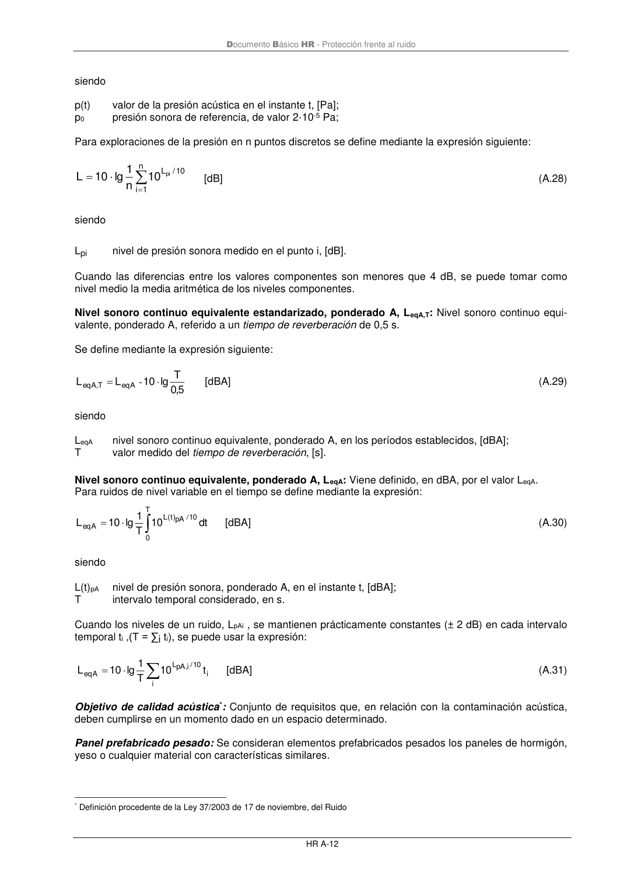

DB-HR Protección frente al ruido · edición 2019-12-20 · capa oficial
Documento DB-HR-oficial · SHA-256 del PDF a67baeca5138bb1f121f797d23a79a4557bd9ac4abacd954024893e05411eeab
Página física 54 de 80.
Copia fiel del PDF fuente · Fuente oficial
Ficha de la disposición en la fuente oficial
Formato: Texto de la página (Markdown)
Documento Básico HR - Protección frente al ruido
HR A-12
siendo
p(t)
valor de la presión acústica en el instante t, [Pa];
p0
presión sonora de referencia, de valor 2·10-5 Pa;
Para exploraciones de la presión en n puntos discretos se define mediante la expresión siguiente:
=
=
n
1
i
10
/
Lpi
10
n
1
lg
10
L
[dB]
(A.28)
siendo
Lpi
nivel de presión sonora medido en el punto i, [dB].
Cuando las diferencias entre los valores componentes son menores que 4 dB, se puede tomar como
nivel medio la media aritmética de los niveles componentes.
Nivel sonoro continuo equivalente estandarizado, ponderado A, LeqA,T: Nivel sonoro continuo equi-
valente, ponderado A, referido a un tiempo de reverberación de 0,5 s.
Se define mediante la expresión siguiente:
5,0
T
lg
10
L
L
eqA
T
,
eqA
=
-
[dBA]
(A.29)
siendo
LeqA
nivel sonoro continuo equivalente, ponderado A, en los períodos establecidos, [dBA];
T
valor medido del tiempo de reverberación, [s].
Nivel sonoro continuo equivalente, ponderado A, LeqA: Viene definido, en dBA, por el valor LeqA.
Para ruidos de nivel variable en el tiempo se define mediante la expresión:
=
T
0
10
/
pA
)t(
L
eqA
dt
10
T
1
lg
10
L
[dBA]
(A.30)
siendo
L(t)pA
nivel de presión sonora, ponderado A, en el instante t, [dBA];
T
intervalo temporal considerado, en s.
Cuando los niveles de un ruido, LpAi , se mantienen prácticamente constantes (± 2 dB) en cada intervalo
temporal ti ,(T = ∑i ti), se puede usar la expresión:
=
i
i
10
/i,
pA
L
eqA
t
10
T
1
lg
10
L
[dBA]
(A.31)
Objetivo de calidad acústica*: Conjunto de requisitos que, en relación con la contaminación acústica,
deben cumplirse en un momento dado en un espacio determinado.
Panel prefabricado pesado: Se consideran elementos prefabricados pesados los paneles de hormigón,
yeso o cualquier material con características similares.
* Definición procedente de la Ley 37/2003 de 17 de noviembre, del Ruido
